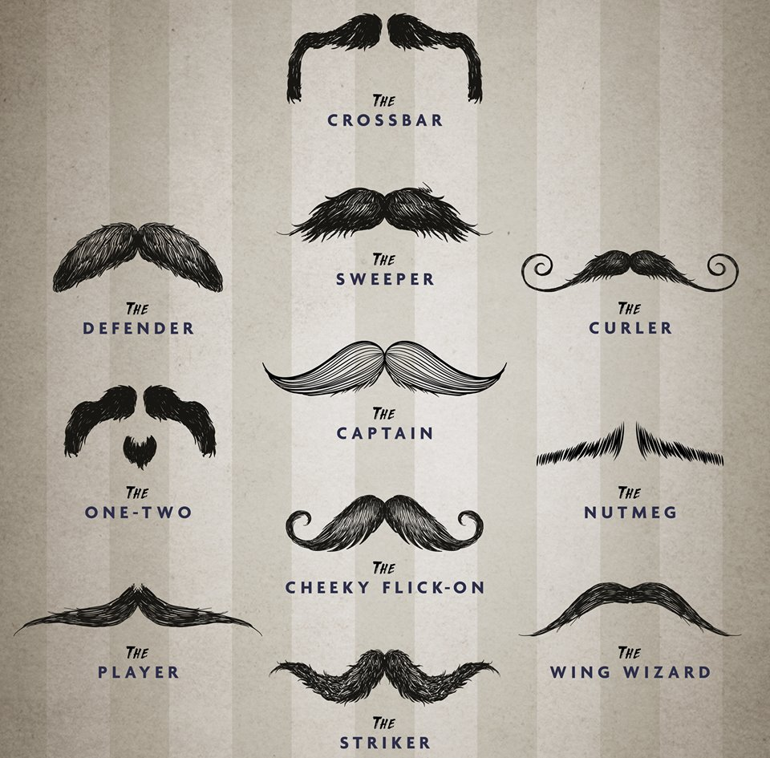
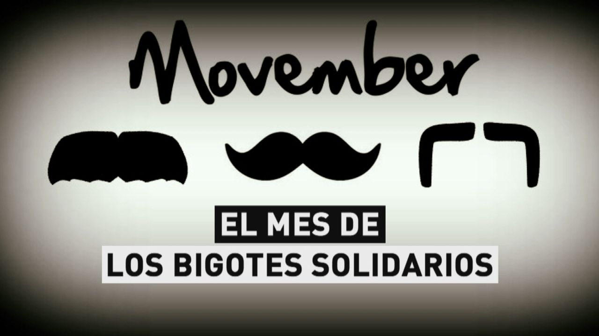
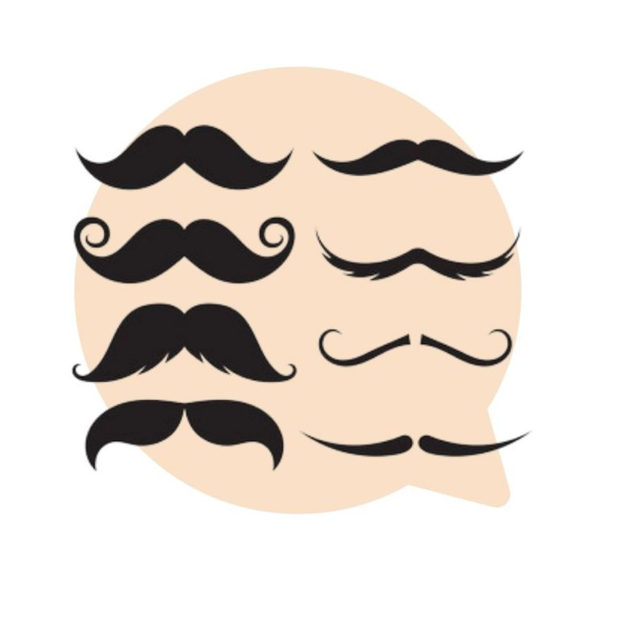

Haz conciencia! Se solidario!
Dejate crecer el bigote durante el mes de noviembre y apoya la causa, un Mo largo significa apoyar a tus hermanos en la lucha contra las enfermedades tanto fisicas como mentales que mas afectan a millones de hombres a diario y ayudas a hacer conciencia.
Placeholder
Placeholder
Placeholder